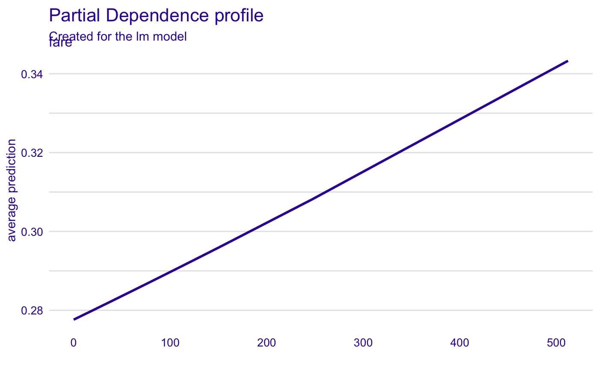
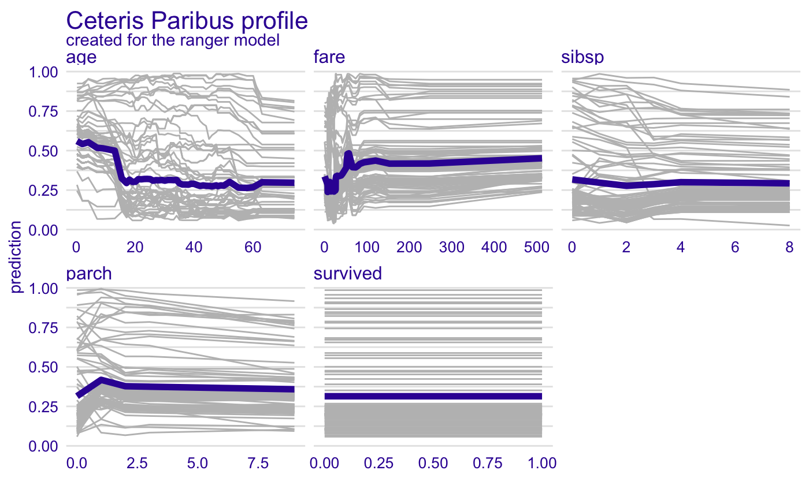
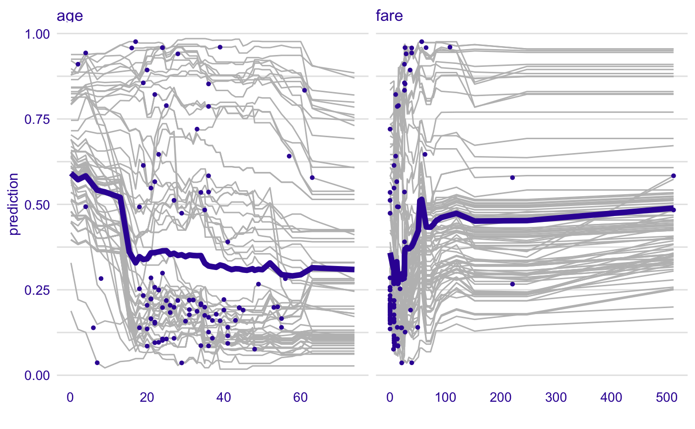
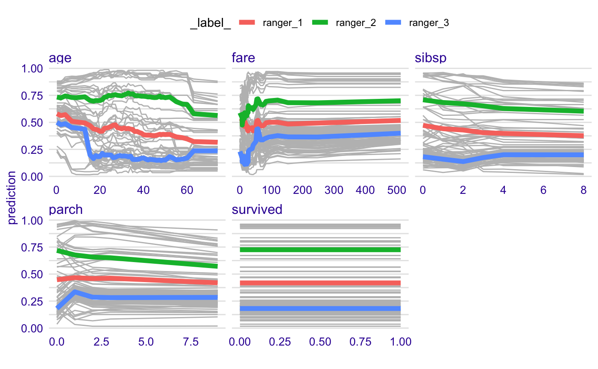
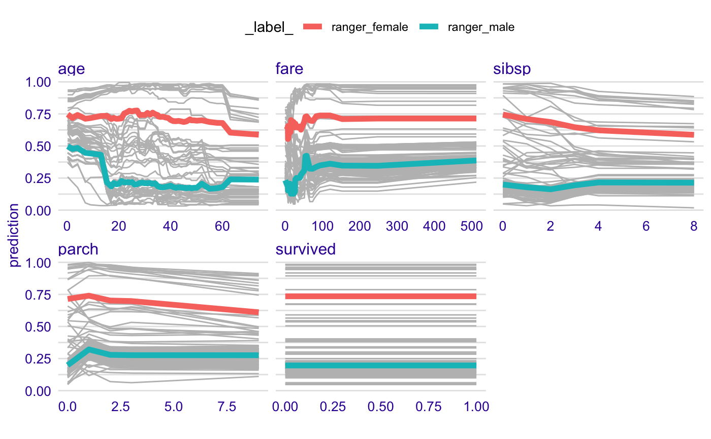
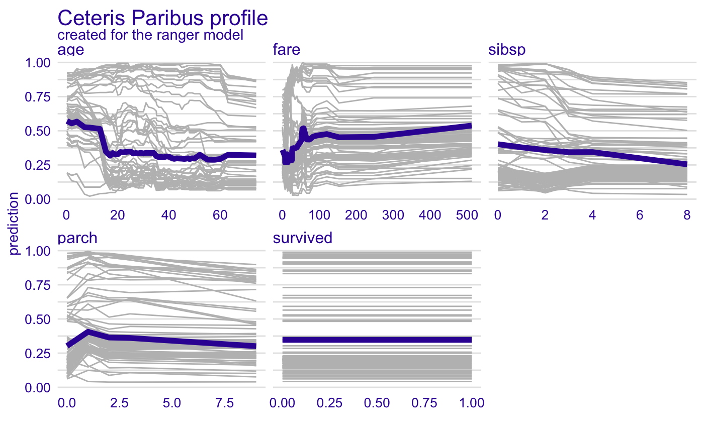

R/model_profile.R
model_profile.RdThis function calculates explanations on a dataset level set that explore model response as a function of selected variables.
The explanations can be calulated as Partial Dependence Profile or Accumulated Local Dependence Profile.
Find information how to use this function here: https://pbiecek.github.io/ema/partialDependenceProfiles.html.
The variable_profile function is a copy of model_profile.
model_profile( explainer, variables = NULL, N = 100, ..., groups = NULL, k = NULL, center = TRUE, type = "partial" ) variable_profile( explainer, variables = NULL, N = 100, ..., groups = NULL, k = NULL, center = TRUE, type = "partial" )
| explainer | a model to be explained, preprocessed by the |
|---|---|
| variables | character - names of variables to be explained |
| N | number of observations used for calculation of aggregated profiles. By default 100. |
| ... | other parameters that will be passed to |
| groups | a variable name that will be used for grouping.
By default |
| k | number of clusters for the hclust function (for clustered profiles) |
| center | shall profiles be centered before clustering |
| type | the type of variable profile. Either |
An object of the class model_profile.
It's a data frame with calculated average model responses.
Underneath this function calls the partial_dependency or
accumulated_dependency functions from the ingredients package.
Explanatory Model Analysis. Explore, Explain and Examine Predictive Models. https://pbiecek.github.io/ema/
titanic_glm_model <- glm(survived~., data = titanic_imputed, family = "binomial") explainer_glm <- explain(titanic_glm_model, data = titanic_imputed)#> Preparation of a new explainer is initiated #> -> model label : lm ( default ) #> -> data : 2207 rows 8 cols #> -> target variable : not specified! ( WARNING ) #> -> model_info : package stats , ver. 3.6.1 , task regression ( default ) #> -> predict function : yhat.glm will be used ( default ) #> -> predicted values : numerical, min = 0.008128381 , mean = 0.3221568 , max = 0.9731431 #> -> residual function : difference between y and yhat ( default ) #> A new explainer has been created!# \dontrun{ library("ranger") titanic_ranger_model <- ranger(survived~., data = titanic_imputed, num.trees = 50, probability = TRUE) explainer_ranger <- explain(titanic_ranger_model, data = titanic_imputed)#> Preparation of a new explainer is initiated #> -> model label : ranger ( default ) #> -> data : 2207 rows 8 cols #> -> target variable : not specified! ( WARNING ) #> -> model_info : package ranger , ver. 0.11.2 , task classification ( default ) #> -> predict function : yhat.ranger will be used ( default ) #> -> predicted values : numerical, min = 0.01280911 , mean = 0.3235818 , max = 0.9923032 #> -> residual function : difference between y and yhat ( default ) #> A new explainer has been created!vp_ra <- model_profile(explainer_ranger, type = "partial", variables = c("age", "fare")) plot(vp_ra, variables = c("age", "fare"), geom = "points")vp_ra <- model_profile(explainer_ranger, type = "partial", groups = "gender") plot(vp_ra, geom = "profiles")# }